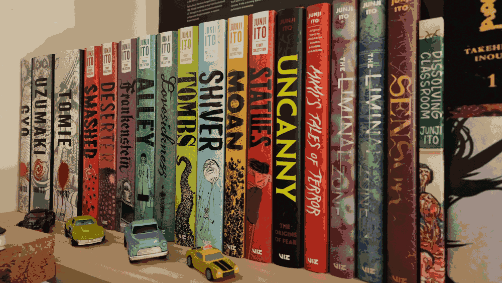
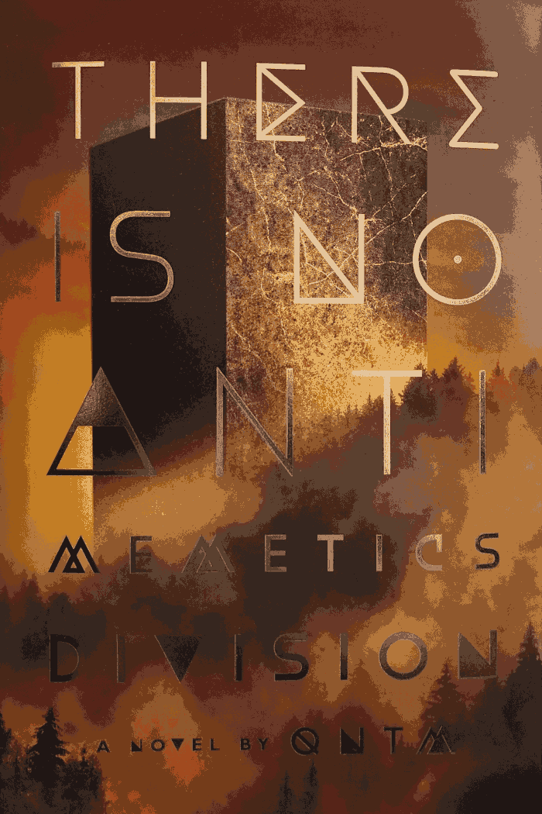

Hi, and welcome to my blog!
This is the place to read my mind... Really! I'm going to write my thoughts down and you can read them! Comments are hard to code in not yet implemented* so feel free to reach out to me at webmaster@potatomatrix.com if you would like to talk about anything on the site. Newest entries will be at the bottom of the list on the left.
Hope you enjoy your stay!
1782349253 Epoch
There have been a few times in life where I've needed to start something big or talk about something heavy and felt apprehensive.
This is one of those times..
I'm not really the type of person to open up or have more than a surface level conversation with people. I hope this blog will be a good exercise in putting myself out there a little bit.
For all of these pages I've wanted to create a vibe / feeling when poking around and reading. This page is no exception.
Hopefully the theming, unix timestamps and floating green text create a feeling of uncovering some kind of long lost space archive, only known by the long gone writer and now you..
There is a big secret I have that I'll let you in on eventually in these logs. It's life changing and so exciting but I cant say anything about it right now. I know that I said I should be more open but this involves more than just me. So for now it's a secret! *until all parties are ready to share the news.
Something I can let you in on is that my favorite color is blue, my favorite song is probably Clair de lune by Debussy, or Girlfriend by Avril Lavigne.. I'm not sure which had more impact on society.. For real though if I had to choose, it would most likely be something by Daft Punk. My favorite food would be apples. I'm simple lol. I do also like a good steak 🥩. That's most of the surface level stuff out of the way.. On to the more real stuff..
Here are my pleas to the void..
My biggest fear is..
Open
Not being able to provide for my family one day.A insecurity I have is..
Open
Not being enough for the people who love me.Something I would never tell anyone..
Open
I struggle trying to cope with the stress.Sorry if that got too real. It feels uncomfortable to share but good to let out. At the same time it feels one sided. If you want to chat about anything going on, or just scream into the void my inbox is open.
I started keeping a journal a while back but it became a daily reminder about things causing a lot of stress in my life. That was not the goal but it turned into that. I don't want this to end up like that did but I do want to have a personal connection with anyone reading. I do joke around a lot so it's necessary to set the tone here that it's a little more serious.
I still want to joke around, but I also want to be authentic.
I hope to add more about what's going on in my life here soon. I think that's going to be it for now. END LOG...
1782526853 Epoch

June is almost over. Truly a life changing month.
I hope to make a book review page or some kind of bookshelf page at some point. I think that would be a fun addition to the site.
For a while I've been on a horror kick reading everything by Junji Ito. A few years ago I read Uzumaki and I've been hooked ever since. I think that was my favorite of his works. Tomie is a close second IMHO.

Recently I started reading "There is no antimemetics division" by ONTM. It's pretty good so far and I look forward to finishing it. If you like SCP Foundation or the Severance TV show It's a must read!
It's almost an escape to read horror for me. To see something bigger and scarier than what I'm dealing with in life makes things more tolerable I guess, ha.
I need to work on making a less stressful environment in general. Stress can cause all kinds of future health problems from what I hear. Interesting that nobody makes a horror based on daily stresses of life..
Could resonate with a lot of people.. END LOG...